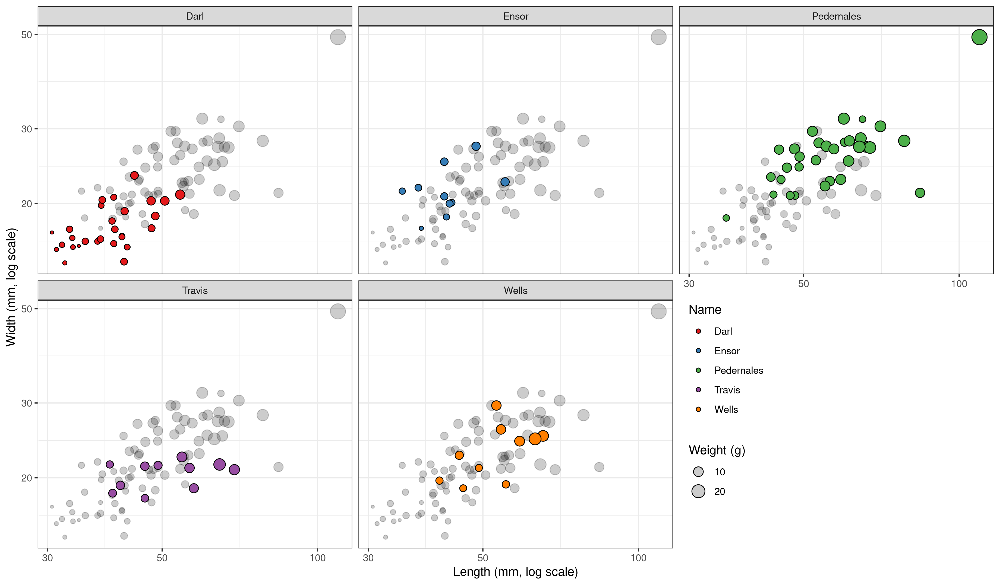
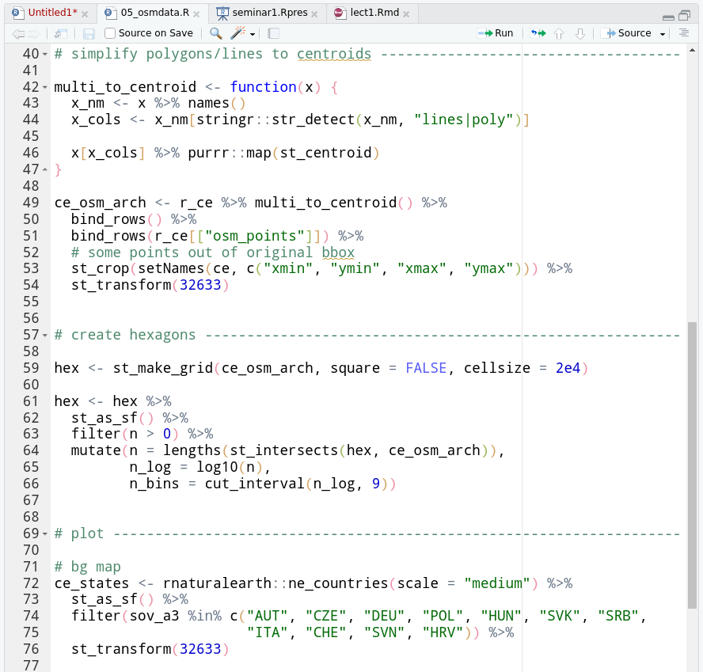

stat4arch
author: Petr Pajdla & Peter Tkáč autosize: true width: 1920 height: 1080
AES_707: Statistics seminar for archaeologists
Seminar 2
type: section
3. 3. 2022
- R data types.
- R objects and subsetting.
- Packages in R.
- How to organize your projects.
- Reading data into R.
R basics
type: section
Functions and objects
incremental: false class: small-code
Function
- Ends with parentheses.
function-name(args...) - Arguments go in the parentheses.
- Does something.
sqrt(x = 1764)[1] 42- Agruments of a function:
args(sqrt)function (x)
NULL- Getting help on functions:
help(sqrt)?sqrtObject
- Anything is an object.
- Contains data.
pi[1] 3.141593pi + 1[1] 4.141593- Create object by assigning data to it
object_name <- 1- <- is an assignment operator
- Use Alt + - shortcut in RStudio
Objects
incremental: false class: small-code
object1 <- 1object1[1] 1object1 + 1[1] 2object2 <- object1 / 2object2[1] 0.5object1 <- object1 + object2object1[1] 1.5- R is case sensitive.
- Be consistent in naming things:
- snake-case:
my_first_object, - camel-case:
myFirstObject.
- snake-case:
- Object names must not start with:
- numbers,
- special characters.
- Do not overwrite things that already exist in
R. - Choose sensible names for objects.
S1 <- pi * 4^2 # for r = 4pi <- 10S2 <- pi * 4^2S1 == S2[1] FALSEPackages
type: sub-section
Packages
R has many functions out of the box.
There are many packages that offer many other, often very specific, functions.
Official packages are deposited at CRAN repository.
As of 2022, there are > 18000 packages.
Packages with relation to archaeology are loosely organized in the CRAN Task View maintained by Ben Marwick.
Install a package
- To install packages from CRAN:
install.packages("package_name")Load (Attach) a package
- To be able to use a package, we need to attach it from our package library:
library("package_name") # orlibrary(package_name)Types of data and objects
type: section
Data types
class: small-code incremental: false
Text strings
- Any kind of text.
- Character data type.
- Always in quotation marks (double or single).
"This is a text string."[1] "This is a text string."'This is also a text.'[1] "This is also a text."Dichotomies
- Boolean/binary values (true/false).
- Logical data type.
- As
TRUEandFALSEinR.
TRUE == FALSE[1] FALSENumbers
Integers (whole numbers)
- Integer data type.
42L[1] 42Floating point numbers (decimal point numbers)
- Double data type.
4.2[1] 4.2- All numbers fall under class numeric.
Special values
- Empty value as
NA, i.e. not available. - Infinities as
Infand-Inf.
Identifying data types
class: small-code incremental: false
- There is a set of functions starting with
is.prefix. - These functions return
TRUE/FALSE.
is.character("How are you?")[1] TRUEis.numeric(c(4, 4L, 4.2))[1] TRUEis.integer(4)[1] FALSEis.integer(4L)[1] TRUEis.double(42)[1] TRUEis.na(1)[1] FALSEis.numeric(pi)[1] TRUEis.double(pi)[1] TRUEis.logical(1)[1] FALSEis.logical(TRUE)[1] TRUEis.logical(FALSE)[1] TRUEis.character(mean)[1] FALSEis.character("mean")[1] TRUEComparing values
class: small-code incremental: false
<, <=, ==, >=, >, !=
x <- 1
y <- 100x[1] 1y[1] 100x < 10[1] TRUEx >= y[1] FALSEy == 100[1] TRUEx != y[1] TRUEy < Inf[1] TRUEx == NA[1] NAis.na(x)[1] FALSE"apple" == "banana"[1] FALSE"pineapple" == "pineapple"[1] TRUETypes of objects
type: sub-section
Vector
class: small-code incremental: false
- Basic data structure.
- Contains a single type of data.
- Created using function
c()(combine, concatenate)
c("Fuu", "Bar")[1] "Fuu" "Bar"x <- c(0, 1, 1, 2, 3, 5, 8, 13, 21, 34, 55, 89, 144)
x [1] 0 1 1 2 3 5 8 13 21 34 55 89 144is.vector(x)[1] TRUESubsetting vectors
- Subset vectors using square brackets
[]
x[2][1] 1x[c(2, 4)][1] 1 2x[-1] [1] 1 1 2 3 5 8 13 21 34 55 89 144x[42][1] NAx[2:5][1] 1 1 2 3Maths with vectors
class: small-code incremental: false
x <- c(3, 6, 9, 12)
y <- 4:1x[1] 3 6 9 12y[1] 4 3 2 1x + y[1] 7 9 11 13(2 * x) / y[1] 1.5 4.0 9.0 24.0y^2[1] 16 9 4 1y >= x[1] TRUE FALSE FALSE FALSESome useful functions
- Return length of a vector with
length().
length(x)[1] 4- Data type of a vector:
typeof(x)[1] "double"is.character(x)[1] FALSEz <- c(1, 2, "fuu", 4, 5)
z[1] "1" "2" "fuu" "4" "5" typeof(z)[1] "character"Matrix
class: small-code incremental: false
- Has rows and columns, rectangular in shape.
- Contains data of a same type, typically numbers.
m <- matrix(data = 1L:20L, ncol = 5, byrow = TRUE)m [,1] [,2] [,3] [,4] [,5]
[1,] 1 2 3 4 5
[2,] 6 7 8 9 10
[3,] 11 12 13 14 15
[4,] 16 17 18 19 20typeof(m)[1] "integer"is.matrix(m)[1] TRUESubsetting matrices
- Give
xandycoordinates for row and column.
matrix[x, y]
m[2, 1][1] 6m[3, c(2, 4)][1] 12 14m[c(3, 4), 2:3] [,1] [,2]
[1,] 12 13
[2,] 17 18m[1, ][1] 1 2 3 4 5m[, c(2, 4)] [,1] [,2]
[1,] 2 4
[2,] 7 9
[3,] 12 14
[4,] 17 19List
class: small-code incremental: false
- Can contain a combination of anything.
- Can have names.
l <- list(
characters = c("fuu", "bar"),
numbers = 1:5,
logicals = c(TRUE, FALSE, TRUE)
)l$characters
[1] "fuu" "bar"
$numbers
[1] 1 2 3 4 5
$logicals
[1] TRUE FALSE TRUElength(l)[1] 3is.list(l)[1] TRUESubsetting lists
- By position (remains a list).
l[2]$numbers
[1] 1 2 3 4 5- By names using
$operator. - Returns a vector.
l$logicals[1] TRUE FALSE TRUEl[[1]] # or double brackets[1] "fuu" "bar"l[[1]][2][1] "bar"Data frame
class: small-code incremental: false
- A special kind of a list.
- All list items have same number of rows.
- Rectangular structure.
dfr <- data.frame(
x = 95:98,
y = c("a", "b", "c", "d"),
z = c(T, F, F, T),
w = seq(4.2, 4.8, by = 0.2) # sequence
)dfr x y z w
1 95 a TRUE 4.2
2 96 b FALSE 4.4
3 97 c FALSE 4.6
4 98 d TRUE 4.8is.data.frame(dfr)[1] TRUEtypeof(dfr)[1] "list"Subsetting data frames
dfr[2, 1][1] 96dfr[2, c(1, 3)] x z
2 96 FALSEdfr[, 1][1] 95 96 97 98dfr$x[1] 95 96 97 98dfr[, "y"][1] a b c d
Levels: a b c ddfr[-c(1, 2), ] x y z w
3 97 c FALSE 4.6
4 98 d TRUE 4.8Exploring the structure of an object
class: small-code incremental: false
dfr x y z w
1 95 a TRUE 4.2
2 96 b FALSE 4.4
3 97 c FALSE 4.6
4 98 d TRUE 4.8nrow(dfr) # nr. of rows[1] 4ncol(dfr) # nr. of columns[1] 4dim(dfr) # dimensions[1] 4 4str(dfr) # structure'data.frame': 4 obs. of 4 variables:
$ x: int 95 96 97 98
$ y: Factor w/ 4 levels "a","b","c","d": 1 2 3 4
$ z: logi TRUE FALSE FALSE TRUE
$ w: num 4.2 4.4 4.6 4.8colnames(dfr) # column names[1] "x" "y" "z" "w"rownames(dfr) # row names[1] "1" "2" "3" "4"head(dfr) # returns top rows of a data frame, also tail() x y z w
1 95 a TRUE 4.2
2 96 b FALSE 4.4
3 97 c FALSE 4.6
4 98 d TRUE 4.8Let’s practice: Dart points project
type: section

Dart points, adapted from Carlson 2011.
Goal
title: false right: 16%

Let’s explore the dart points data set!
Measurements on five types of dart points from Fort Hood in central Texas (Darl, Ensor, Pedernales, Travis, and Wells). The points were recovered during 10 different pedestrian survey projects during the 1980’s and were classified and measured by H. Blaine Ensor…
Task
type: prompt incremental: false
- Start RStudio.
- In the Console, install
archdatapackage. - Create a new script (Ctrl + Shift + n).
- Load the
archdatapackage from the library. - Load a DartPoints data set from the archdata package:
data("DartPoints", package = "archdata") - Notice the object
DartPointsis loaded in the Environment panel. - What class is the
DartPointsobject? - How large (number of rows and columns) is the data set?
- What columns does it have?
- Explore the contents of the object…
- Read details about the data set using
help(DartPoints)or?DartPoints
Solution
install.packages("archdata")library(archdata)data("DartPoints", package = "archdata")class(DartPoints)[1] "data.frame"dim(DartPoints) # also nrow()/ncol()[1] 91 17colnames(DartPoints) [1] "Name" "Catalog" "TARL" "Quad" "Length" "Width"
[7] "Thickness" "B.Width" "J.Width" "H.Length" "Weight" "Blade.Sh"
[13] "Base.Sh" "Should.Sh" "Should.Or" "Haft.Sh" "Haft.Or" Explore the object I
title: false type: prompt class: small-code incremental: false
head(DartPoints, n = 4) Name Catalog TARL Quad Length Width Thickness B.Width J.Width H.Length
1 Darl 41-0322 41CV0536 26/59 42.8 15.8 5.8 11.3 10.6 11.6
2 Darl 35-2946 41CV0235 21/63 40.5 17.4 5.8 NA 13.7 12.9
3 Darl 35-2921 41CV0132 20/63 37.5 16.3 6.1 12.1 11.3 8.2
4 Darl 36-3487 41CV0594 10/54 40.3 16.1 6.3 13.5 11.7 8.3
Weight Blade.Sh Base.Sh Should.Sh Should.Or Haft.Sh Haft.Or
1 3.6 S I S T S E
2 4.5 S I S T S E
3 3.6 S I S T S E
4 4.0 S I S T S Etail(DartPoints, n = 4) Name Catalog TARL Quad Length Width Thickness B.Width J.Width H.Length
88 Wells 35-2898 41CV0876 21/66 55.4 19.3 5.3 11.3 15.6 15.2
89 Wells 35-2458 41CV0810 23/62 45.8 18.9 6.5 12.1 12.2 10.9
90 Wells 35-3012 41CV0270 24/62 49.1 21.1 6.3 14.8 15.2 16.6
91 Wells 44-0732 41BL0239 39/55 63.1 24.7 5.4 10.3 12.1 21.1
Weight Blade.Sh Base.Sh Should.Sh Should.Or Haft.Sh Haft.Or
88 5.6 E S I T S T
89 4.9 S E S T S P
90 5.2 S E S T S P
91 16.3 S E S T S TExplore the object II
title: false type: prompt class: small-code
str(DartPoints)'data.frame': 91 obs. of 17 variables:
$ Name : Factor w/ 5 levels "Darl","Ensor",..: 1 1 1 1 1 1 1 1 1 1 ...
$ Catalog : chr "41-0322" "35-2946" "35-2921" "36-3487" ...
$ TARL : chr "41CV0536" "41CV0235" "41CV0132" "41CV0594" ...
$ Quad : chr "26/59" "21/63" "20/63" "10/54" ...
$ Length : num 42.8 40.5 37.5 40.3 30.6 41.8 40.3 48.5 47.7 33.6 ...
$ Width : num 15.8 17.4 16.3 16.1 17.1 16.8 20.7 18.7 17.5 15.8 ...
$ Thickness: num 5.8 5.8 6.1 6.3 4 4.1 5.9 6.9 7.2 5.1 ...
$ B.Width : num 11.3 NA 12.1 13.5 12.6 12.7 11.7 14.7 14.3 NA ...
$ J.Width : num 10.6 13.7 11.3 11.7 11.2 11.5 11.4 13.4 11.8 12.5 ...
$ H.Length : num 11.6 12.9 8.2 8.3 8.9 11 7.6 9.2 8.9 11.5 ...
$ Weight : num 3.6 4.5 3.6 4 2.3 3 3.9 6.2 5.1 2.8 ...
$ Blade.Sh : Factor w/ 4 levels "E","I","R","S": 4 4 4 4 4 4 2 1 1 1 ...
$ Base.Sh : Factor w/ 4 levels "E","I","R","S": 2 2 2 2 2 1 2 2 4 2 ...
$ Should.Sh: Factor w/ 4 levels "E","I","S","X": 3 3 3 3 3 2 3 2 2 3 ...
$ Should.Or: Factor w/ 4 levels "B","H","T","X": 3 3 3 3 3 3 3 3 2 3 ...
$ Haft.Sh : Factor w/ 5 levels "A","E","I","R",..: 5 5 5 5 5 3 3 5 5 5 ...
$ Haft.Or : Factor w/ 5 levels "C","E","P","T",..: 2 2 2 2 2 1 2 2 2 3 ...Reading data into R
type: section
Brainstorming
type: prompt incremental: false
How do you organize your data?
- How do you collect your data?
- How do you save your data?
- What formats are you using?
- Why do you do it the way you do it?
Reading data into R
incremental: false
- There are built-in functions to read data into
R. - There are many useful packages.
Most common cases
- CSV file (comma separated values) ✔
- Europe: semicolon (;) as a separator, comma (,) as a decimal mark.
- America: comma (,) as a separator, period (.) as a decimal mark.
- Spreadsheet (Excel, LibreOffice etc.) ✔
- Export as a CSV.
- Use a dedicated package.
- Google spreadsheet: use a dedicated package.
- Database ✔
- Export as a CSV.
- Use a dedicated package.
The process
- Identify where and how is your data stored.
- What type of a file is it?
- Is it a plain text?
- What is used as a separator (delimiter)?
- What is the encoding of the file?
- How are empty values represented?
- Is it a spreadsheet?
- Is it a database?
- Is it a local database?
- Is it a (SQL) server?
- Is it a table on a website?
Comma separated values
- CSV is a plain text document.
- Great for small to medium size data sets.
- Suitable for long-term storage and data archiving.
dataset,x,y
dino,55.3846,97.1795
dino,,96.0256
dino,46.1538,94.4872id,date_from,date_to,date_accurate,url,parent_id,leaf,name_cs,name_en,name_de
1,,,,1-teorie-a-pristupy,,f,1) Teorie a přístupy,1) Theory and approaches,1) Theorie (e) und Ansätze (e)
2,,,,1-teorie-a-pristupy/archeologie,1,f,archeologie,archaeology,Archäologie (e)
3,,,,1-teorie-a-pristupy/archeologie/dejiny-archeologie,2,f,dějiny archeologie,history of archaeology,Geschichte der Archäologie (e)Comma separated values
incremental: false
R base functions
Comma as a separator
read.csv(file = "file path")Semicolon as a separator
read.csv2(file = "file path")- These function are directly available in base R.
Package readr
Comma as a separator
read_csv(file = "file path")Semicolon as a separator
read_csv2(file = "file path")- These functions come from the
readrpackage. - This package must be installed first.
install.packages("readr")- And loaded from the library prior to being used.
library(readr)Files with different separators
incremental: false
TSV
- Tab (tabulator) separated values (
read.delim(file = "file path") # decimal mark ,
read.delim2(file = "file path") # decimal mark .- Using
readrpackage:
library(readr)
read_tsv(file = "file path")Other delimiter
- Sometimes other symbols are used to separate columns in files.
read.table(file = "file path", sep = "separator")- Using
readrpackage:
read_delim(file = "file path", delim = "separator")
Tip: When you do not know what is the file encoding, use readr function guess_encoding("file").
Spreadsheets
incremental: false
Excel
- To read Excel files, there is a package
readxl.
# remember to install it first
install.packages("readxl")
# and load it when you want to use it
library(readxl)- You can list the sheets in the Excel file:
excel_sheets(path = "file path")- And read a selected sheet into R:
read_excel(path = "file path", sheet = "sheet name")Google sheets
- There is a package
googlesheets4. - For more details see here: https://googlesheets4.tidyverse.org/.
# install the package
install.packages("googlesheets4")
# attach it from the library
library(googlesheets4)
# read a sheet based on its URl etc.
read_sheet("sheet URL")Workflows
type: section
Organize your work in scripts
left: 40% class: small-code incremental: false

- Execute the current line with Ctrl + Enter.
- Source the whole script with Ctrl + Shift + Enter.
In RStudio
- Create new script with Ctrl + Shift + n.
- Put some basic info at the top of a script.
- Use a comment
#, also Ctrl + Shift + c.
- Use a comment
# Dart points dataset is analyzed in this script.
# (...)- Load the packages you will use at the top of the script.
library(readr)- Comment your code to be able to know what you are doing.
- In general, comment on the why each step is taken…
- Structure the script using sections with Ctrl + Shift + r.
# data -----------------------------------------
obj <- read_csv("path to a file")
# explore structure of data
str(obj)Organize your work in projects
left: 40% class: small-code incremental: false
- Each project is in a separate directory.
- There are sub-folders for different parts of the project.
~/Documents/
MyProject/
code/
script1.R
script2.R
data/
raw/
input_dataset.xlsx
processed/
settlements.csv
set_locations.geojson
figures/
plot1.png
plot1.pdf
MyProject.Rproj- In RStudio, create a new project in the top right corner:
Projects -> New Project -> New Directory -> New Project.
File paths
Absolute file path
- The file path is specific to a given user.
C:/Documents/MyProject/data/raw/input_dataset.xlsx
Relative file path
- If I am currently in
MyProject/folder:
./data/raw/input_dataset.xlsx
Package here is here to save the day!
- Do not forget to install the package first.
- Load it at the top of your script.
library(here)
library(readr)herewill know where the top directory is.
# read data --------------------------------------------
settlements <- read_csv(here("data/processed/settlements.csv"))Let’s practice!
type: prompt incremental: false class: small-code
Tasks
- In the console, install packages here and readr.
- Create a project with a sensible name and location.
- Create sub-folders
data/andcode/. - Create a new script and save it in the
code/folder. - Load readr and here packages.
- Download some example data from https://1url.cz/@stat4arch01.
url <- "https://1url.cz/@stat4arch01"
download.file(url, destfile = here("data/exData.zip"))
unzip(here("data/exData.zip"), exdir = here("data/"))- Explore the files you downloaded one by one and try to load them into R.
Solutions
install.packages(c("readr", "here"))dir.create("./data/")
dir.create("./code/")library(here)
library(readr)url <- "https://1url.cz/@stat4arch01"
download.file(url, destfile = here("data/exData.zip"))
unzip(here("data/exData.zip"), exdir = here("data/"))- The Excel file, if we had
readxlpackage installed:
library(readxl)excel_sheets(here("data/dartPoints00.xlsx"))read_excel(here("data/dartPoints00.xlsx"),
sheet = "dartPoints00")Solutions
type: prompt incremental: false class: small-code
- We will use functions from the
readrpackage.
dartPoints01.csv
- CSV file with semicolon (;) separators.
dartPoints01 <- read_csv2(here("data/dartPoints01.csv"))dartPoints02.txt
- Tab separated file (TSV).
dartPoints02 <- read_tsv(here("data/dartPoints02.txt"))dartPoints03.csv
- CSV file with comma (,) separators.
dartPoints03 <- read_csv(here("data/dartPoints03.csv"))dartPoints04.txt
- File with custom separators (#).
dartPoints04 <- read_delim(here("data/dartPoints04.txt"),
delim = "#")dartPoints05.csv
- CSV file separated by commas (,).
NAvalues represented by en-dash (-).
dartPoints05 <- read_csv(here("data/dartPoints05.csv"),
na = "-")Summing up
incremental: false type: prompt
- Why would one want to use
R? - Why is it good to use scripts?
- Where to look for help?
- What is the difference between a function and an object?
- What are the basic objects in
R? - What data types are there in
R? - What is
NA? - What are the tidy data principles?
- Do you remember any functions?
Homework assignments
type: prompt
Interactive practice
- Go through this short interactive course on basic programming in R:
https://rstudio.cloud/learn/primers/1.2.
Project
- Prepare the data you will use for your project.
- Next time, we will have a short show-and-tell session where we will have a quick look at the data sets.
- You can prepare one slide with some details about your data set, show us a map with the extent of your data set, an image illustrating what you are doing etc.
- Send us either the whole data set or at least a sample so we can check what kind of data you will be using.